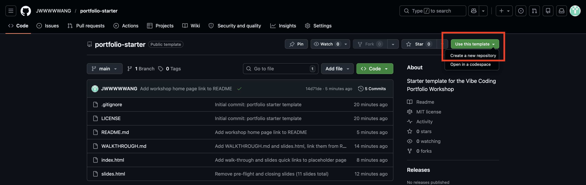
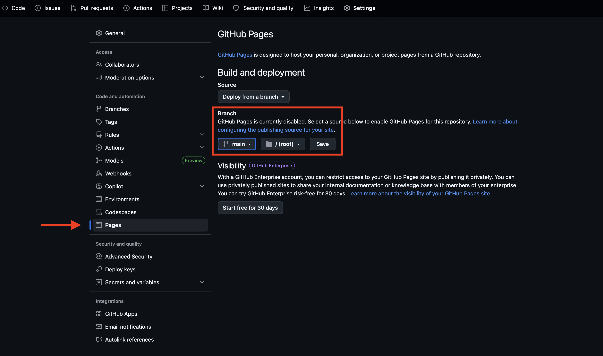
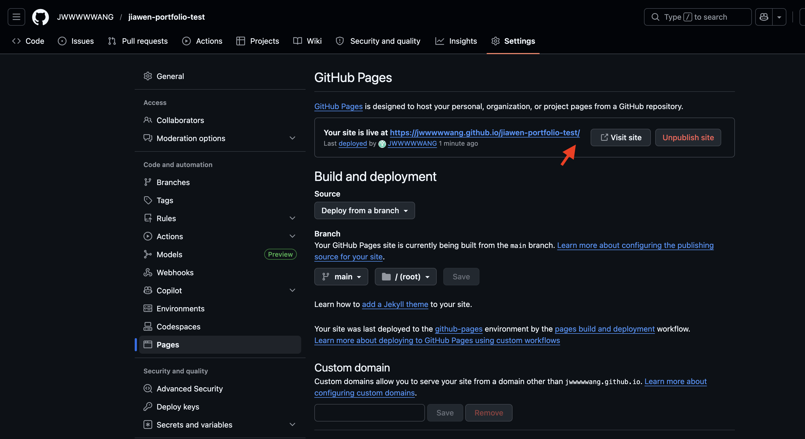
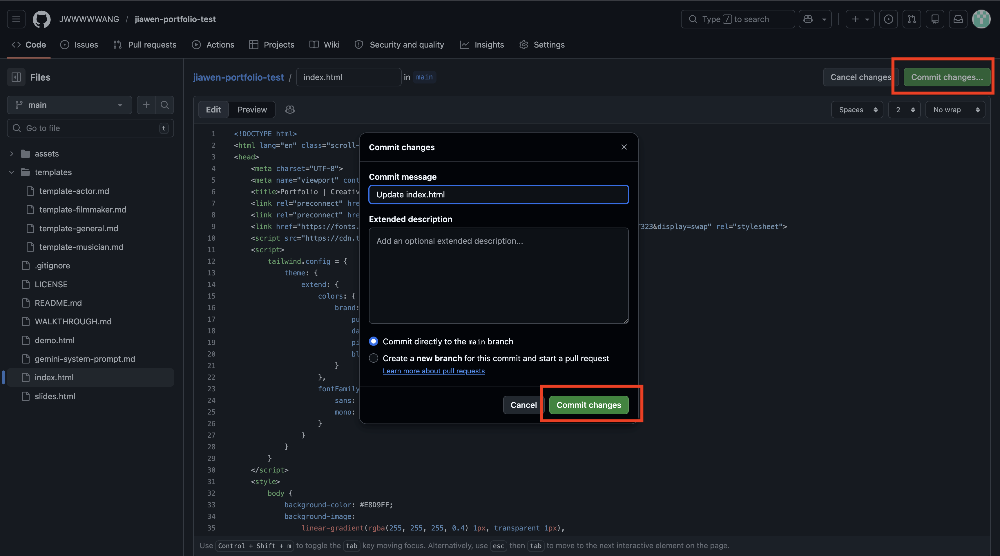

Workshop · 20 minutes
Build a live, public portfolio website in 20 minutes.
No coding. No installs. 100% free.
Instructor: Jiawen Wang
By the end of this session
Live at: jwwwwwang.github.io/portfolio-starter/demo.html
Open it on your phone — this is a real, public website.
The 20-minute flow
1 · Copy template
→
2 · Enable Pages
→
3 · Fill markdown
4 · Feed Gemini
→
5 · Paste & publish
→
6 · Iterate
The walk-through doc has every step in detail — keep it open on your laptop.
Step 1 · 30 seconds
Use this template button → Create a new repositoryportfolio, set Public, click Create repository
Click the green "Use this template" button in the top-right
Step 2 · 1 minute
Settings → Pages (in the left sidebar)main / / (root)Save
Settings → Pages → Branch: main → Save
Step 2 · still 1 minute
After ~1 minute, refresh the Pages page. A green banner appears with your live URL.

Your URL will look like https://<your-username>.github.io/portfolio/
⚠️ If you open it now, you'll see the placeholder — that's fine. We fill it in Step 5.
Step 3 · 5 minutes
Open the templates/ folder in your repo and pick the one that fits you:
template-general.md — universal base (start here if unsure)template-actor.md — actorstemplate-filmmaker.md — filmmakerstemplate-musician.md — musiciansClick the file → Raw → Cmd+A / Cmd+C into any text editor. Replace every [[placeholder]] with your content.
Short on time? Fill just Hero + About + one project. Everything else is optional — add more later.
Images go in the assets/ folder (drag-and-drop upload on GitHub). Videos → YouTube/Vimeo embed links. Audio → SoundCloud/Spotify.
Step 4 · 3 minutes · ⭐ The core moment
No reference image? Just type a style in words: "minimal Swiss / brutalist / Y2K / editorial vintage."
Step 5 · 3 minutes
index.htmlCmd+A → Delete the placeholder → Cmd+V paste the Gemini HTMLCommit changes… button → confirm
🎉 Your site is live.
Step 6 · 3 minutes · The fun part
Back in Gemini, try:
"Make the hero darker with a subtle gradient."
"Use Playfair Display for the headings."
"Add a fade-in animation when scrolling."
"Make it more brutalist / Y2K / editorial."
"Make it fully responsive on mobile."
"Add a dark mode toggle."Copy → paste into index.html → commit → refresh.
Repeat until you love it.
If you get stuck
No GitHub account? GitHub stuck? 30-second backup:
index.html on your desktopTrade-off: random URL, manual updates. But it always works.
Other issues? Check the Troubleshooting section of the walk-through doc → WALKTHROUGH.md
After today
.me or .tech domain with GitHub Student PackSettings → Pages → Custom domainShare your URL
Open each other's sites on your phones.
Same 20 minutes. Totally different results. That's the point.